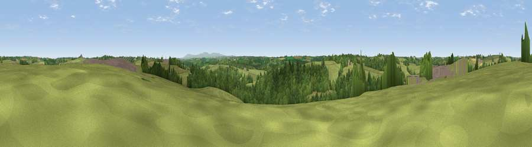

Viewpoint near Thornbury
#28738 in England · top 66% of its area beats it · near Thornbury · access?Where it is
The exact computed spot (SS 40975 09125). Click the marker for map links.
Public access: no public right of way or access land is recorded at this exact spot — it may be on private land. Computed from Natural England's CRoW access layer and OpenStreetMap rights of way — not the legal definitive map. Always verify locally.
The view, rendered

A 360° render of this exact spot computed from the terrain model, tree cover and land cover — summer colours, afternoon light, calibrated against photographs of famous viewpoints. Real trees, hedges and buildings will differ in detail.
The panorama
Grey silhouette: terrain skyline in each direction (720 bearings, Earth curvature and refraction included). Dashed green: skyline with trees (+15 m) and buildings (+8 m) as obstacles. Blue strip: how far the ground is visible on each bearing.
Where the view opens
Wedge length = distance to the farthest visible ground on that bearing (vegetation-aware). Rings at 10, 25 and 50 km.
What fills the view
64% grassland · 30% woodland · 6% cropland ·
Angular shares of the visible panorama (visual magnitude), not map area. Landscape diversity 0.37 (0–1 Shannon).
Key numbers
More beautiful places nearby
The staircase of upgrades: each row has a higher view potential than everything closer. Driving times are estimates from straight-line distance, calibrated against real road routing — check an actual route before setting out.
| Place | Direction | Drive | Score |
|---|---|---|---|
| Viewpoint near Newton St Petrock | NNW · 2 km | ~6 min | 49.7 |
| Viewpoint near Hollacombe | SSW · 6 km | ~13 min | 60.3 |
| Viewpoint near Petrockstowe | E · 8 km | ~17 min | 65.5 |
| Viewpoint near Buckland Brewer | N · 12 km | ~22 min | 66.6 |
| Viewpoint near Parkham | N · 15 km | ~26 min | 69.2 |
| Viewpoint near Bucks Mills | NNW · 15 km | ~27 min | 84.0 |
| Viewpoint near Crackington Haven | WSW · 32 km | ~49 min | 88.1 |
| Viewpoint near Combe Martin | NNE · 43 km | ~63 min | 88.9 |
50.85971, -4.26091 · source: screening · position refined by local search. Computed location — check access rights before visiting.